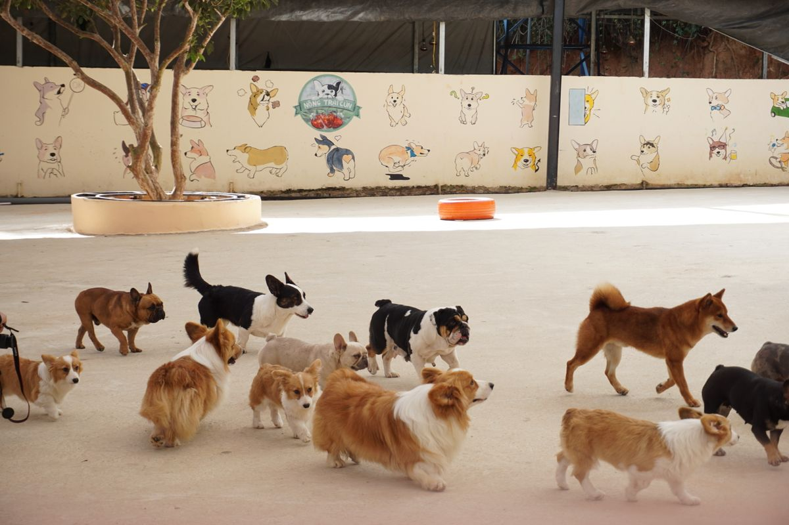
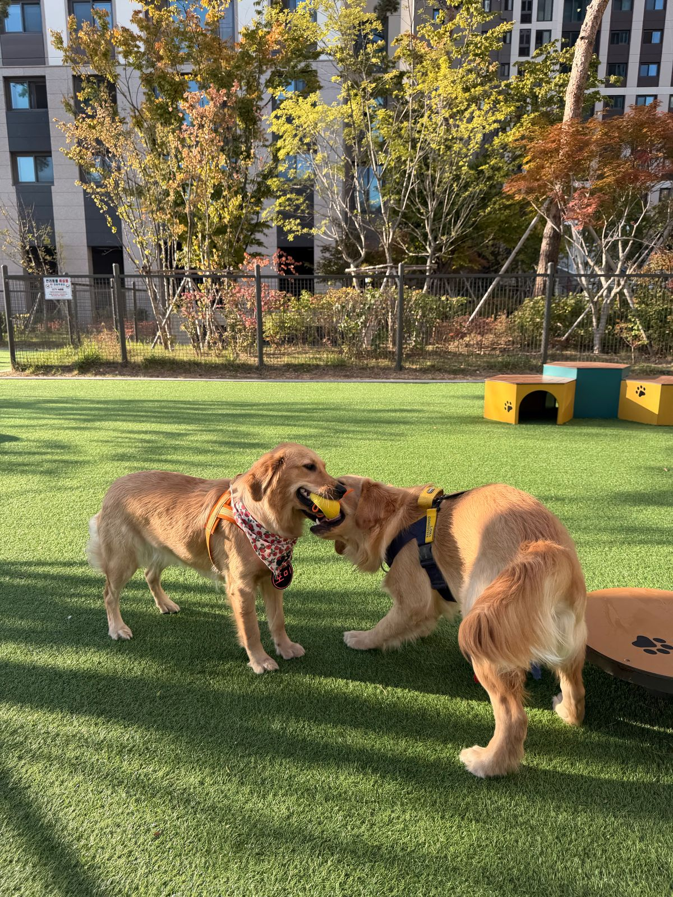
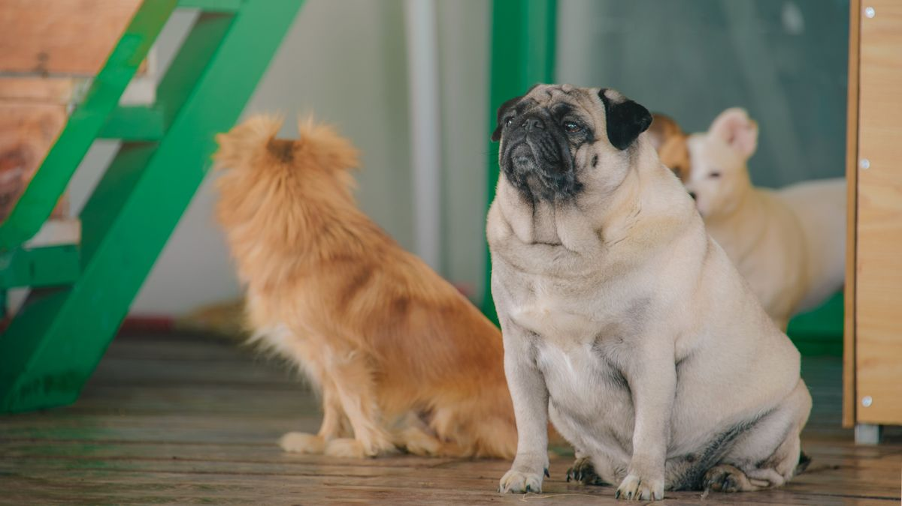

Doggie daycare
Doggie daycare.
Pet Boarding and Daycare, Greensboro
Doggie daycare, grooming, and overnight boarding in Greensboro.

Doggie daycare.

Overnight dog boarding.

Professional dog grooming.
Dog Days is a dog boarding, daycare, and grooming business on Battleground Avenue in Greensboro. The business offers doggie daycare, professional dog grooming, and overnight dog boarding. Boarding pickup and drop-off run every day except New Year's Day, Christmas Day, Thanksgiving, July 4th, and Memorial Day, and the business is open Easter Sunday.
Boarding pickup and drop-off run every day except New Year's Day, Christmas Day, Thanksgiving, July 4th, and Memorial Day. The business is open Easter Sunday. Call (336) 272-1620 or email forms@DogDaysGreensboro.com to ask about daycare, grooming, or boarding.
Address: 705 Battleground Ave, Greensboro, NC 27401
Hours: Monday to Friday 7:00 AM to 6:30 PM. Saturday 8:30 AM to 3:00 PM. Sunday 8:30 AM to 5:00 PM.
Phone: (336) 272-1620
Email: forms@DogDaysGreensboro.com
Call (336) 272-1620 Email forms@DogDaysGreensboro.com
Dog Days serves Greensboro, NC. Questions? Call (336) 272-1620.